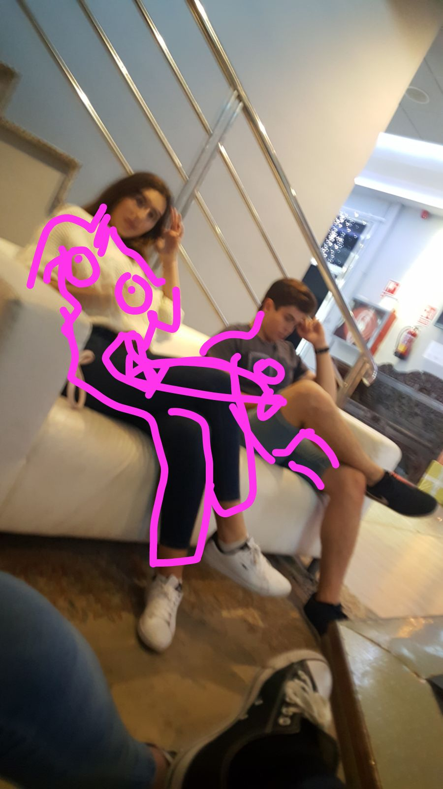
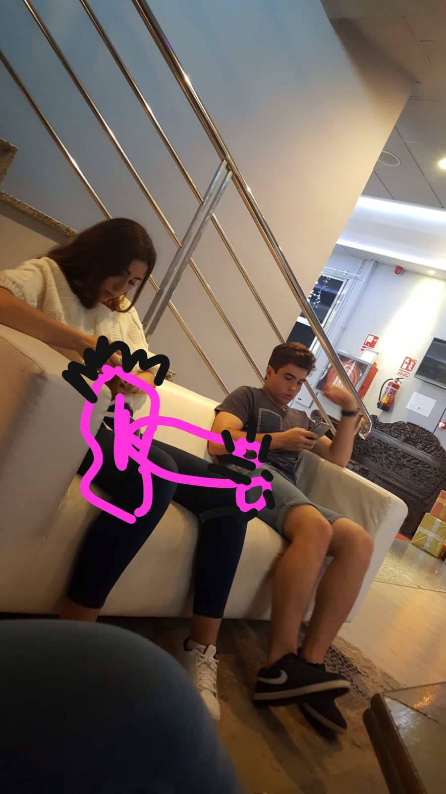

Gossip
Click the titles to read the best Gossip xoxo.
Evio
Shocker! EVIO IS REAL XOXO I mean... no one expected this but it's definetely iconic. For those who live under a rock Evio = Eva x Antonio. Uy cowboy girl I love you.
Irakliy Joins the equation
NO WAY!! It seems like eva had an affair with Irakliy when Antonio was gone! We knew that Eva had a thing for him in the past but... that was a dick move eva... How will Antonio react??
The Reaction
Ironic. It seems like our source of information wasn't completely precise. Yes, eva had an affair. She's a cheater. However, it wasn't with Irakliy... It was with Ms. Metcalf! We understand how the confusion arose xoxo Thousands of testimonials suggest that Antonio has declared himself gay... The irony just keeps increasing...
Additionally, Adriana and Antonio had twincest under the table, Mencia and Eva joined. This information is 100% real as one of our main sources assures they witnessed everything xoxo
Some Visual aid

🐈
Today has been a crazy day for Aloha Bitches. We've had affairs, twincest, trump's nudes leaked... However, we have new gossip xoxo and it's the greatest gossip you will hear today... and I ain't kidding. I know that you Bitches don't like to read long-ass paragraphs so I'll just announce the gossip straight away: Rosie has a rotten pussy and Eva 😍loves😍 to suck on it. Yeah, I know it isn't as impressive as you expected but it's called clickbait bitches xoxo
Oh no.
We can't inform you as of right now but we have the most iconic gossip to tell you 😮, stay tuned.
Today has been a crazy day for Aloha Bitches. We've had affairs, twincest, trump's nudes leaked... However, we have new gossip xoxo and it's the greatest gossip you will hear today... and I ain't kidding. I know that you Bitches don't like to read long-ass paragraphs so I'll just announce the gossip straight away: Rosie has a rotten pussy and Eva 😍loves😍 to suck on it. Yeah, I know it isn't as impressive as you expected but it's called clickbait bitches xoxo